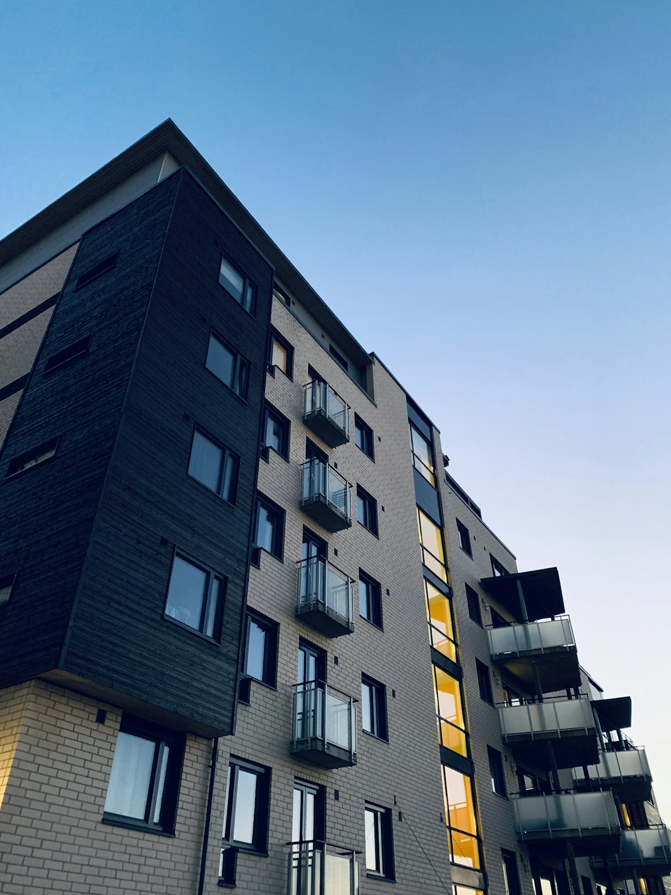

SOLD
REPRESENTED BY STEVEN
$518,000
2106 LA TERRACE CIRCLE, SAN JOSE, CA 95123
1 BED · 1 BATH · 543 SQ.FT · SOUTH SAN JOSE
CAPITAL OF SILICON VALLEY, GOLF COUNTRY CLUBS & HISTORIC ENCLAVES
As Northern California's largest city and the economic anchor of Silicon Valley, San Jose combines world-leading technology headquarters with distinct, highly sought-after residential pockets. From the gated country club fairways of Silver Creek Valley and the tree-shaded historic avenues of Willow Glen to the foothill estates of Almaden Valley, Steven Lenz Jr. delivers meticulous market analysis and proven closing representation.
Silicon Valley's premier gated country club, featuring custom Mediterranean and contemporary hillside mansions, private golf, tennis, and clubhouse dining.
Tree-lined streets, Lincoln Avenue boutiques, outdoor cafes, and classic architectural styles spanning Craftsman, Spanish Revival, and Victorian homes.
Tucked into the southern foothills near Quicksilver County Park, offering expansive parcels, equestrian facilities, and renowned public schools.
Strategic commuter corridor near Santa Teresa foothills, Light Rail and Caltrain transit, with peaceful residential avenues.
